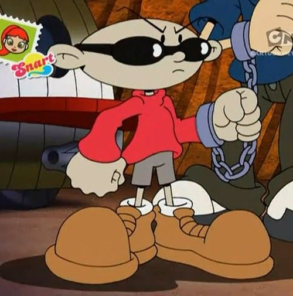

Aprendi também que posso realizar parágrafos com a tag /p
Deixar as palavras em negrito com a tag /b
E as palavras em destaque itálico com a tag /i
Porém usando as semanticas ficariam /strong para usar o negrito
Aprendi também que com a tag /img eu consigo pegar imagens internas e externas para colocar no meu código de uma forma fácil

Agora pegando uma imagem de uma sub-pasta ou do mesmo local do arquivo .html
Aprendi também a usar a tag /mark com o style do css Realizando esta marcação
E ali na parte head do código eu estou utilizando a tag /style { com esse simbolo e o comando dentro dele pra definir toda a pre configuração desse comando no site
Temos também algumas tags aleatorias que eu aprendi /sup /sub que consiste em descolar o caractere pra baixo ou pra cima deixando pequeno H2O e X20